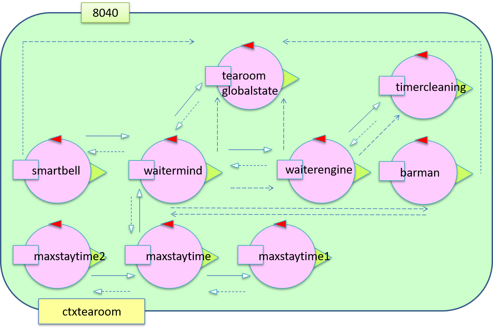
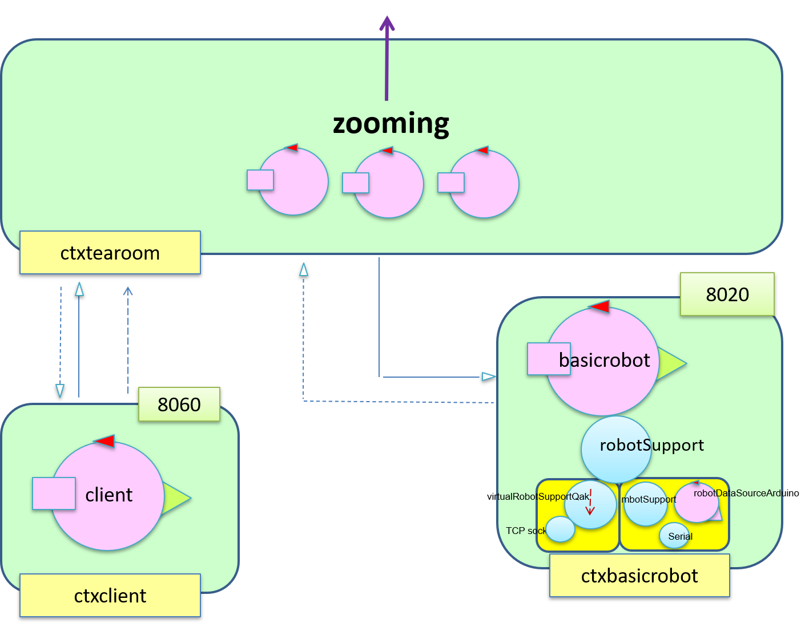

Nello
sprint 1 abbiamo deciso di mantenere lo stato complessivo della
tearoom all'interno della waitermind tuttavia con i nuovi requisiti lo stato della
tearoom è diventato più complesso e il
waiter ha bisogno di prendere delle scelte a seconda dello stato.
Allo scopo di allegerire da questi compiti la waitermind e di facilitare lo sviluppo futuro di una Web App che consenta il monitoraggio della
tearoom secegliamo di introdurre un
nuovo attore
tearoomglobalstate al quale gli altri attori si rivolgeranno per registrare cambiamenti nello stato della
tearoom.
Dall'analisi dei requisiti emerge la necessità di introdurre un
timer in modo da tenere sotto controllo il tempo trascorso del task
clean.
Questo timer riceve un Dispatch con l'indicazione del tempo da cui partire.
Dunque, quando si interrompe il task
clean, viene memorizzato il tempo trascorso in modo da non dover ricominciare tutto da capo.
Possiamo riassumere il compito di ogni attore:
-
waitermind: master del waiterengine, mantine la logica di esecuzione;
-
waiterengine: slave del waitermind, esegue i movimenti e le pulizie;
-
tearoomglobalstate: mantiene lo stato complessivo della tearoom e risponde alla richieste di conoscenza di stato da parte di altri attori;
-
timer: conta il tempo trascorso e all'interruzione informa il waiterengine che a sua volta aggiorna lo stato.
Il
tearoomglobalstate può essere un potenziale collo di bottiglia ma dato che le azioni sono sufficientemente veloci il sistema non ne risente.
Il
tearoomglobalstate memorizza la
conoscenza di base della
tearoom, ovvero dove si trovano le entità, e i futuri cambiamenti di stato in un file
Prolog.
Inoltre, il
tearoomglobalstate sceglie e ritorna quale
table assegnare a un nuovo
client controllando prima il
table 1 e poi il
table 2 perchè il
table uno è quello più vicino alla porta.
All'avvio del
waiter si controlla subito che i
table siano puliti perchè è possibile che siano sporchi dalla serata del giorno prima e in questo caso il
waiter li pulisce
Sono state individuate le seguenti
situazioni critiche:
| Problematica |
Soluzione |
| quale table pulisce per primo il waiter quando sono entrambi da pulire |
il waiter sceglie il table nella fase di pulizia più avanzata. |
| gestione della richiesta di uscita a timer scaduto |
se arriva una richiesta di uscita dalla stanza quando è già scattata il maxstaytime viene ingnorata. |
| gestione drink per client non al table |
il client non è seduto all'interno della stanza perchè ha chiesto di pagare prima, quando il barman dice che l'ordine è pronto il waiter va al bar,
ignora il drink e controlla la coda. |
| gestione della collect quando il client viene cacciato prima di ordinare |
dato che non abbiamo messo informazioni sul pagamento il waiter esegue le stesse operazioni come se il client dovesse pagare. |
| calcolo del tempo di attesa per l'inform |
il client viene informato dallo smartbell del tempo esatto massimo (maxstaytime più corto + tempo di pulizia) di attesa, senza contare interruzioni nella pulizia, prima di trovare un table pulito.
L'attesa non viene gestita tramite una coda ma il client deve risuonare il smartbell. |
Inoltre, il modello è stato
raffinato ulteriormente:
nello sprint 1 solo quando il
waiter ritorna in
home vede se ci sono altre azioni
da eseguire mentre adesso viene interrotto mentre va verso
home.
Sono stati aggiunti altri tre
attori per soddisfare il requisito di
maxstaytime.
Per
maxstaytime si intende il tempo che il
client ha a disposizione per effettuare la sua consumazione nella
tearoom.
Quando il
client decide cosa prendere, il contatore parte e viene bloccato quando viene fatta la Request dal
client al
waiter quando il
client deve ordinare.
Per semplificare l'accesso a
maxstaytime di ogni
client è stato introdotto un attore chiamato
maxstaytimer.
Esso gestisce il tempo a disposizione ad ogni
client inviando al waitermind un Dispatch quando il tempo scade.
L'attore maxstaytimer usa due attori, ciascuno dei quali gestisce a sua volta il tempo trascorso per ogni
client nella
tearoom.
Dunque, da un punto di
vista logico il nostro sistema è formato da più attori in contesti diversi:


Di seguito è riportato il
modello.
tearoom.qak
client.qak